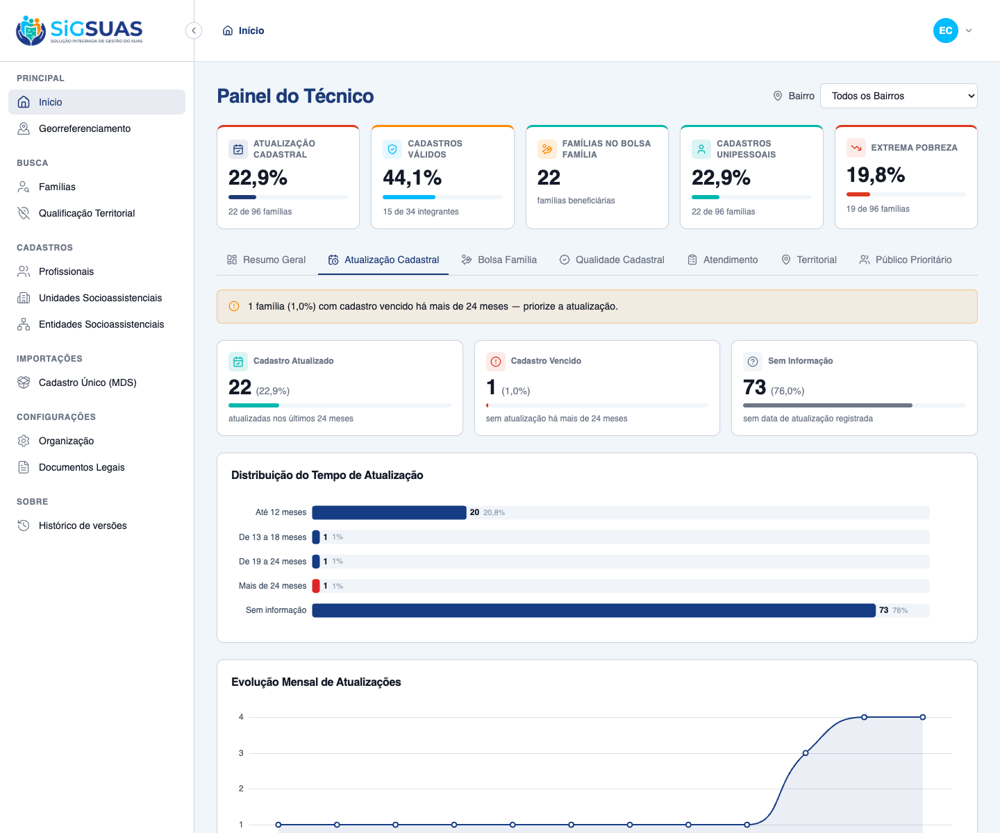
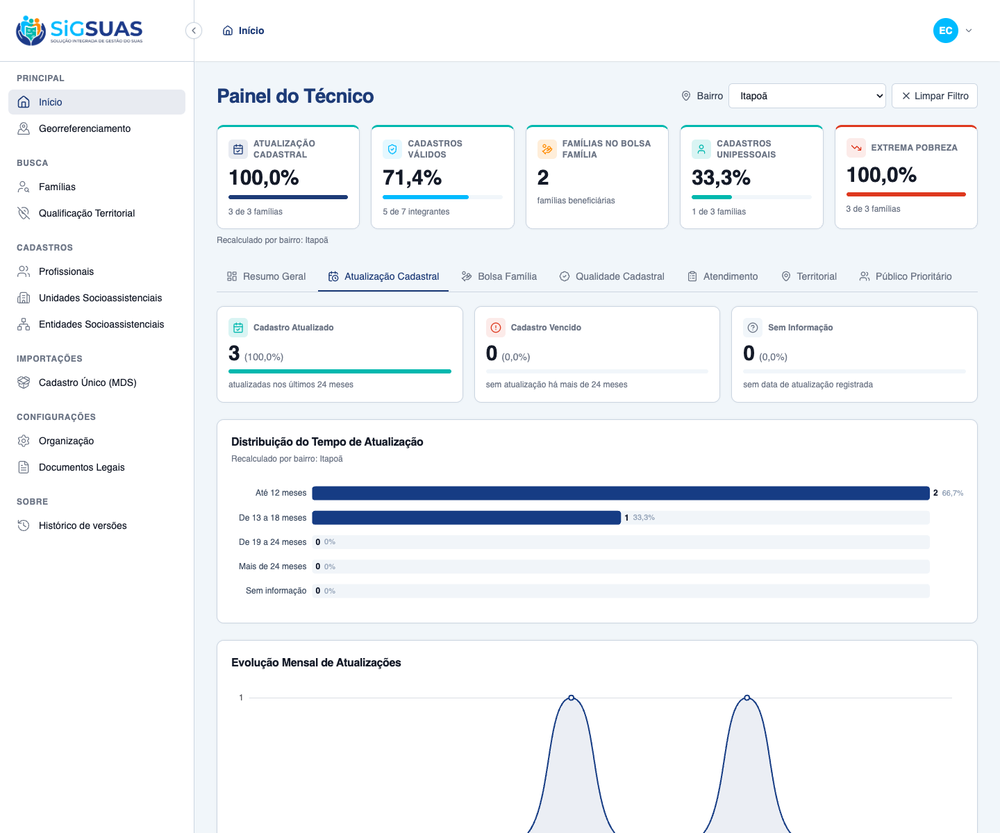

Relatório de Critérios de Aceite — Painel 2: Atualização Cadastral
Resumo
8 critérios evidenciados: 5 por navegador dirigindo o client real (CA04 realce de alerta na faixa "Mais de 24 meses", indicadores e distribuição do RN04, evolução mensal, e o RG01 nas modalidades padrão/dinâmico/limpar) e 3 por suíte automatizada (partição + consistência com o KPI 1 da barra fixa, isolamento multi-tenant e gate de permissão). Todos atendidos. Suíte Pest do backend: 10 testes verdes (53 asserções).
| CA | Critério | Status |
|---|---|---|
| CA04 | Identificação de cadastros vencidos (realce em cor de alerta) | ATENDIDO · navegador |
| RN04-ind | Indicadores do Painel 2 (Atualizado / Vencido / Sem informação) e distribuição | ATENDIDO · navegador |
| RN04-evo | Evolução mensal de atualizações (gráfico de linha, 12 meses) | ATENDIDO · navegador |
| RG01-a | Filtro global por Bairro — comportamento padrão ("Todos os Bairros") | ATENDIDO · navegador |
| RG01-bc | Filtro global por Bairro — recálculo dinâmico e "Limpar Filtro" | ATENDIDO · navegador |
| PART | Partição e consistência com a barra fixa | ATENDIDO · navegador + automatizado |
| ISO | Isolamento multi-tenant | ATENDIDO · automatizado |
| PERM | Gate de permissão (sem dashboard.view-indicators → 403 / painel oculto) | ATENDIDO · automatizado |
CA04 — Identificação de cadastros vencidos (realce em cor de alerta) ATENDIDO · navegador
Critério (Gherkin): Dado que acesso o Painel 2 (aba "Atualização Cadastral") Quando analiso o gráfico de distribuição do tempo de atualização Então o sistema destaca visualmente, em cor de alerta, a parcela de famílias no grupo "Mais de 24 meses".
Como foi testado: Login como Master, aba Atualização Cadastral. Leitura do gráfico Distribuição do Tempo de Atualização.
- A faixa <b>"Mais de 24 meses"</b> é renderizada em <b>vermelho (alerta)</b>, distinta das demais faixas (azul).
- O cartão "Cadastro Vencido" também aparece em vermelho, reforçando o alerta para busca ativa.

RN04-ind — Indicadores do Painel 2 (Atualizado / Vencido / Sem informação) e distribuição ATENDIDO · navegador
Critério (Gherkin): Dado um recorte com famílias Quando o painel é calculado Então "Atualizado" = famílias com atualização nos últimos 24 meses (≤24m) E "Vencido" = famílias sem atualização há mais de 24 meses (>24m) E a distribuição traz Até 12 / 13–18 / 19–24 / Mais de 24 meses (+ Sem informação).
Como foi testado: Cartões de topo + gráfico de distribuição (Apache ECharts) no recorte municipal.
- Cadastro Atualizado 22 (22,9%), Cadastro Vencido 1 (1,0%), Sem Informação 73 (76,0%).
- Distribuição (gráfico): a faixa "Mais de 24 meses" aparece com 1 família em vermelho (alerta) e "Sem informação" com 73; as demais faixas somam as 22 famílias atualizadas em até 24 meses.
RN04-evo — Evolução mensal de atualizações (gráfico de linha, 12 meses) ATENDIDO · navegador
Critério (Gherkin): Dado um recorte com famílias atualizadas ao longo do tempo Quando o painel é calculado Então a evolução mensal traz 12 pontos (mês → volume de atualizações).
Como foi testado: Gráfico Evolução Mensal de Atualizações (linha, Apache ECharts).
- Série contígua de 12 meses (ago/25 → jul/26), com o volume de famílias atualizadas por mês.
- Meses sem atualização aparecem com volume 0; a linha evidencia a tendência recente de alta.

RG01-a — Filtro global por Bairro — comportamento padrão ("Todos os Bairros") ATENDIDO · navegador
Critério (Gherkin): Dado que acabei de carregar a aba "Atualização Cadastral" Quando nenhum bairro está selecionado Então o filtro inicia em "Todos os Bairros" E os indicadores, a distribuição e a evolução refletem a consolidação municipal.
Como foi testado: Ao abrir o dashboard, o filtro global (topo, à direita) inicia em Todos os Bairros.
- Filtro em "Todos os Bairros"; barra fixa de KPIs e Painel 2 exibem a consolidação municipal (96 famílias).
RG01-bc — Filtro global por Bairro — recálculo dinâmico e "Limpar Filtro" ATENDIDO · navegador
Critério (Gherkin): Dado que o filtro global está em "Todos os Bairros" Quando eu seleciono o bairro "Itapoã" Então os cartões, a distribuição e a evolução recalculam para as famílias do bairro (RN09) E ao acionar "Limpar Filtro" o painel volta à consolidação municipal.
Como foi testado: Seleção do bairro Itapoã no filtro global; um único evento recalcula a barra fixa E o painel (RG01/RN10).
- Recálculo instantâneo: Cadastro Atualizado 22 → 3 (100%), Vencido 1 → 0; barra fixa e painel exibem "Recalculado por bairro: Itapoã".
- A distribuição recalcula (Até 12 meses 2, De 13 a 18 meses 1, demais 0).
- O botão "Limpar Filtro" retorna imediatamente à visão municipal (Atualizado volta a 22, filtro a "Todos os Bairros").

PART — Partição e consistência com a barra fixa ATENDIDO · navegador + automatizado
Critério (Gherkin): Então Atualizado + Vencido + Sem informação = Total de Famílias E up_to_12m + m13_to_18 + m19_to_24 + over_24m + no_information = Total E "Atualizado" (≤24m) é igual ao numerador do KPI 1 (% Atualização Cadastral) da barra fixa (#10184).
Como foi testado: Verificado na UI (22+1+1 = 24) e por testes automatizados (Pest) — ver apêndice.
- Na tela: 22 (Atualizado) + 1 (Vencido) + 73 (Sem informação) = 96 (Total).
- CadastralUpdateTest: partição das 5 faixas e teste cruzado "updated == numerador do KPI 1" (RN10).
ISO — Isolamento multi-tenant ATENDIDO · automatizado
Critério (Gherkin): Dado um usuário vinculado ao Tenant A Quando ele solicita o Painel 2 Então apenas famílias do Tenant A entram nos cálculos E um neighborhood_uuid fora do município do Tenant A retorna 422.
Como foi testado: Coberto por teste automatizado (Pest) — ver apêndice.
- DashboardCadastralUpdateIsolationTest: famílias do Tenant B nunca são contadas para o Tenant A.
- CadastralUpdateTest: 422 para bairro fora do município do tenant.
Evidência por cobertura automatizada — ver Anexo.
PERM — Gate de permissão (sem dashboard.view-indicators → 403 / painel oculto) ATENDIDO · automatizado
Critério (Gherkin): Dado um usuário sem dashboard.view-indicators Quando ele chama o endpoint do Painel 2 Então recebe 403 (e o painel não é exibido).
Como foi testado: Coberto por teste automatizado (Pest) — o endpoint reusa o gate da barra fixa (#10184).
- CadastralUpdateTest: operador sem o papel dedicado recebe 403; Master acessa sem add-on.
Evidência por cobertura automatizada — ver Anexo.
Anexo — Cobertura automatizada (Pest — CadastralUpdate + Isolamento)
PASS Tests\Feature\Dashboard\CadastralUpdateTest ✓ it classifies families into the 4 time bands + no-information and p… 0.40s ✓ it places a family updated exactly at the 24-month boundary in 19–2… 0.05s ✓ it returns a contiguous 12-month evolution with empty months as zer… 0.07s ✓ it reports "updated" equal to the strategic indicators KPI 1 numera… 0.06s ✓ it recalculates for a neighborhood, covering only geocoded families… 0.06s ✓ it returns zeroed groups and a 12-point zero evolution when the sco… 0.04s ✓ it returns 422 for a neighborhood_uuid outside the tenant municipal… 0.04s ✓ it denies the panel to the base operator without the dedicated role 0.04s ✓ it grants the panel to the Master without any add-on role 0.04s PASS Tests\Feature\TenantIsolation\DashboardCadastralUpdateIsolationTest ✓ it never counts families from another tenant in the cadastral updat… 0.05s Tests: 10 passed (53 assertions) Duration: 0.93s